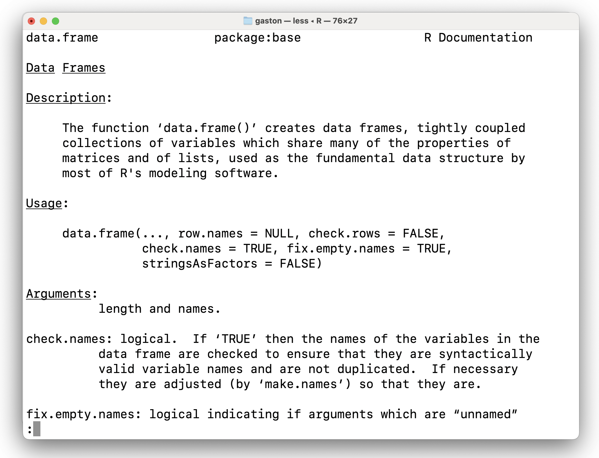
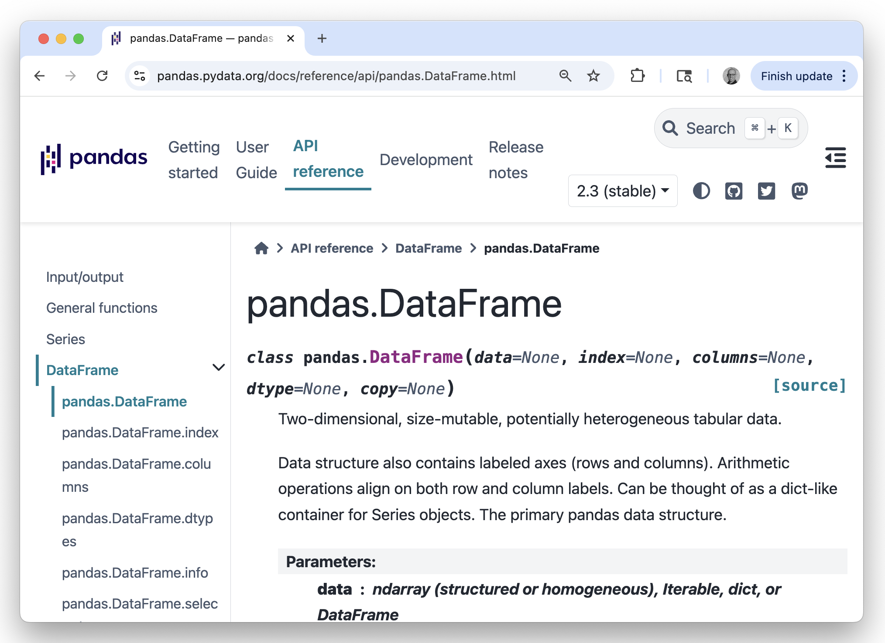

Factors and Data Frames
Data structures for data science
While you’re waiting
Imagine you collect University ID number and major from 5 friends:
Conceptually, in what ways is the data in these two vectors similar? In what ways is it different?
Imagine instead you asked 100 friends. For each vector, can you think of a more efficient way for the computer to store that data?
Agenda
Factors
Data Frames
Factors
While you’re waiting
Imagine you collect University ID number and major from 5 friends:
Conceptually, in what ways is the data in these two vectors similar? In what ways is it different?
Imagine instead you asked 100 friends. For each vector, can you think of a more efficient way for the computer to store that data?
Factors
A data structure for storing categorical data.
Stores the values in an integer vector and adds a levels attribute to map integers to character strings. Created with factor().
Attributes
Objects built on top of simpler data structures can have attributes. A factor’s attributes include its class and levels.
Setting Levels
Quickly change all of the values with a particular level.
[1] STATISTICS ECON STATISTICS DATA ECON
Levels: DATA ECON STATISTICSAdd a level even if it’s not observed.
Taking advantage of class
Certain functions behaved differently depending on the class of the object that is passed to it.
Ordering levels
You can create a factor with ordered levels by adding ordered = TRUE.
[1] STAT ECON STAT DATA ECON
Levels: STAT < ECON < DATA < BIO
Factors and Matrices
Both are augmented versions of atomic vectors that are given classes to allow for special behavior.
The Limitations of Our Structures
The Limitation of Atomic Vectors
Question: What was the song and distance of the second index card?
😬 This is brittle!
The Limitation of Matrices
The Limitation of Lists
4me4u Golden by Huntrix Stay with me
1 2 1 Min. 1st Qu. Median Mean 3rd Qu. Max.
10.0 77.5 450.0 727.5 1100.0 2000.0 🤯 Too complicated to subset.
Data Structures in R (recap)
Data Frames
Data Frame
A data frame is a named list of vectors of the same length. Created with data.frame().
name gender height weight
1 Anakin male 1.88 84
2 Padme female 1.65 45
3 Luke male 1.72 77
4 Leia female 1.50 49Data Frame (cont.)
A data frame holds attributes for (column) names, row.names, and its class, "data.frame".
Data Frame Attributes
Other useful functions for Data Frames
summary(): summary of each columnstr(): structurehead(): firstnrowstail(): lastnrowsdim(): dimensionsncol(): number of columnsnrow(): number of rows
Question
name gender height weight
1 Anakin male 1.88 84
2 Padme female 1.65 45
3 Luke male 1.72 77
4 Leia female 1.50 49Using what you know about matrix and list subsetting, write code to subset from star_wars …
- The data frame containing only
heightandweight. - The character vector
gender. - The data frame containing only the last row.
- The value
1.88
02:30
Subsetting Data Frames
Data frames can be subset in 2 ways:
- as a two dimensional array:
dat[row, col]dat[row, ]dat[ ,col]
- as a one dimensional list:
dat[]dat[[]]dat$
The Evoluation of the Data Frame
- 1990: Data Frame (R) {.fragment fragment-index=“1”}
- 2009: Pandas DF (Py) {.fragment fragment-index=“2”}
- 2016: Tibble (R) {.fragment fragment-index=“3”}
- 2020: Polars (R/Py) {.fragment fragment-index=“4”}



The Evoluation of the Data Frame
Tibbles
An updated version of a data frame with convenient behaviors.
Tibbles
The main difference is that tibbles are lazy and surly: they do less and complain more.
Hadley Wickham